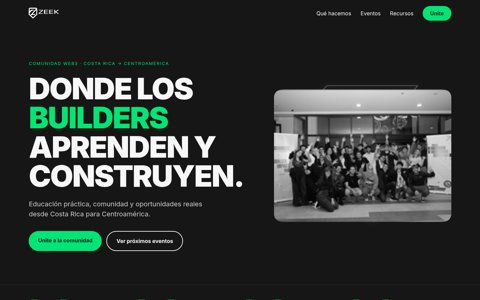
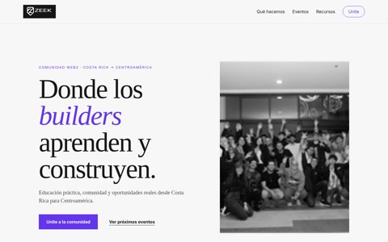
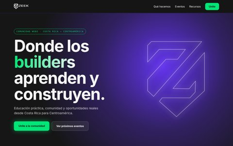
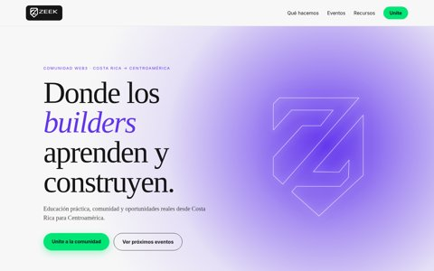
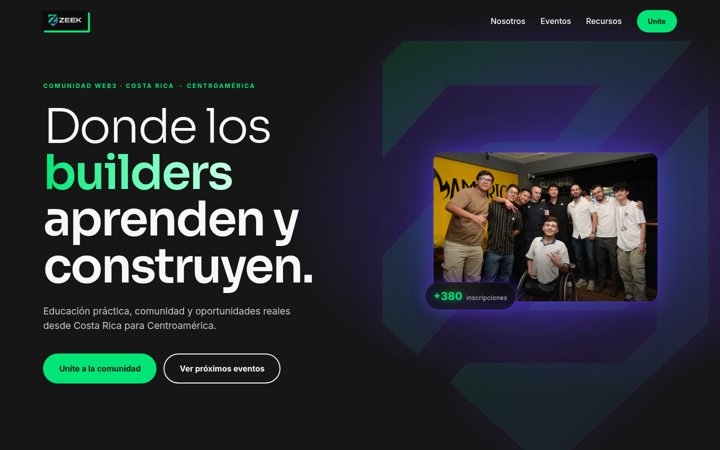

5 direcciones con la paleta oficial (#6335ED, #01E576, #F7F7F7, #161616). Tocá una para navegarla.

1. Dark boldFondo oscuro, tipografía enorme en mayúsculas y acentos verdes.
2. Editorial claroMucho aire, serif elegante y acentos violeta.
3. Glow violeta techHero con resplandor violeta, logo luminoso y botones verdes.
7. Mezcla 2+3 · Editorial con glowEditorial claro con un hero de resplandor violeta y CTAs verdes.
9. Mezcla personalizadaTipografía ancha gigante, glow violeta azulado, carrusel de eventos y logo con sombra verde.